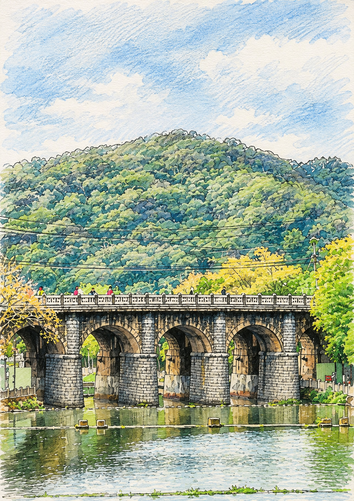

GUANXI · NIULAN RIVER
關西國小 五年級校訂課程

關西・牛欄河親水公園 × 縣定古蹟東安古橋
五年級校訂課程 六節課
從校門口出發，走一段路就到牛欄河。
在這裡，孩子用腳走過、用眼睛看過、用畫筆畫過，
再用文字與客語，把家鄉的樣子留下來。
五道石拱，對應五個單元 · 點選拱門進入課程
Course Character
徒步走訪與水彩寫生並行，讓學生用身體記住牛欄河與東安古橋的古色古香與美感。
創作之前先讀懂：從東安古橋的興建歷史與建築特色，到文學作品裡的抒情手法。
景物詞彙、日常對話與情意表達，讓客語自然長在鄉土探索的過程裡。
把所見所聞轉化成導覽、畫作與文章，讓愛家鄉、惜文化成為可以帶著走的能力。
Six Lessons
五個單元、六節課。走訪與寫生之間，各安排一節閱讀課：先讀歷史，再讀文學，最後動筆。
Hakka Words by the River
點卡片翻面看解釋與例句
Lesson 6 · Writing Studio
單元五的暖身。點選下面的詞語堆疊成句子，先讓學生把畫面拼出來，再回頭改寫成自己的詩。
Check Point